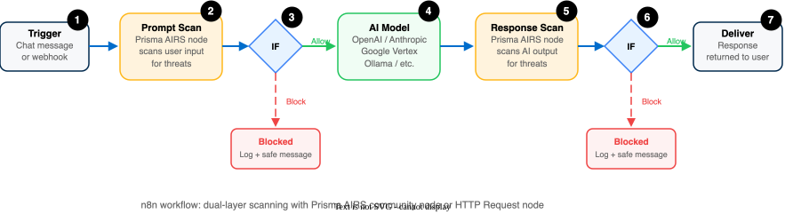

n8n: Prisma AIRS Runtime Security
Add AI prompt and response scanning to n8n workflow automations using the Prisma AIRS community node
This guide integrates Prisma AIRS Runtime Security: real-time scanning of AI prompts and responses during workflow execution. Unlike the GitHub Actions and Jenkins integrations (which use Model Security with OAuth2), n8n uses a standard AIRS API key (x-pan-token) and an AI Profile Name to call the Runtime Security Scan API.
Two integration paths are available: the official Prisma AIRS community node (recommended) or direct HTTP Request nodes calling the Scan API. This guide covers both approaches.
| Scanning Phase | Supported | Description |
|---|---|---|
| Prompt | ✅ | "Prompt Scan" operation scans user input for threats |
| Response | ✅ | "Response Scan" operation scans AI-generated responses |
| Streaming | ❌ | Node processes complete responses after generation |
| Pre-tool call | ❌ | Workflow-based — not automatic tool interception |
| Post-tool call | ❌ | Tool result scanning not implemented |
Architecture Overview
The n8n integration places Prisma AIRS scan nodes at two points in a workflow: before the user prompt reaches the AI model (prompt scan) and after the AI model generates a response (response scan). Each scan returns an allow or block verdict. An IF node routes blocked content to a handler that returns a safe message instead of the flagged content.

- Trigger — Chat message or manual trigger receives user input.
- Prompt Scan — Prisma AIRS scans the user prompt for injection, PII, malicious URLs, and other threats.
- Route — IF node checks the scan verdict. Blocked prompts are logged and a safe message is returned.
- AI Model — Allowed prompts are forwarded to the AI model (OpenAI, Anthropic, Google Vertex, Ollama, etc.).
- Response Scan — Prisma AIRS scans the AI-generated response for data leakage, malicious code, and policy violations.
- Route — IF node checks the response verdict. Blocked responses are replaced with a safe message.
- Deliver — Allowed responses are returned to the user.
- Community node (
@paloaltonetworks/n8n-nodes-prisma-airs) — provides a purpose-built UI with operation dropdowns (Prompt Scan, Response Scan, Dual Scan, Batch Scan, Mask Data). Credential management is handled natively. Recommended for most deployments. - HTTP Request node — calls the Prisma AIRS Scan API directly. Provides full control over request headers and body. Use when custom headers, metadata, or
tr_idcorrelation are required.
Phase 1: Prerequisites
The Prisma AIRS community node requires instance owner permissions for installation.
- Open the n8n instance (Cloud or self-hosted).
- Navigate to
Settings>Community Nodes. - Confirm the
Community Nodespage loads and theInstallbutton is visible.
For a new self-hosted instance, follow the n8n Docker installation guide. Ensure the instance has outbound internet access to reach the npm registry and the Prisma AIRS API endpoints.
The Settings > Community Nodes page loads. The account has owner-level permissions to install nodes.
Runtime Security requires an active Prisma AIRS license, a configured AI Security Profile, and an API key.
- Log in to Strata Cloud Manager.
- Navigate to
AI Access Security. - Confirm a Security Profile (AI Profile) exists and note its exact name (case-sensitive).
- Obtain or generate an AIRS API key (this is the
x-pan-tokenvalue).
The Prisma AIRS API is available in multiple regions. The community node uses the US endpoint by default. For other regions, use HTTP Request nodes with the appropriate base URL:
| Region | Base URL |
|---|---|
| US | https://service.api.aisecurity.paloaltonetworks.com |
| EU | https://service.api.aisecurity.eu.paloaltonetworks.com |
| India | https://service.api.aisecurity.in.paloaltonetworks.com |
| Singapore | https://service.api.aisecurity.sg.paloaltonetworks.com |
The AI Security Profile name and AIRS API key are recorded. The regional API endpoint is identified.
The community node provides a native n8n interface for Prisma AIRS scan operations.
- In n8n, navigate to
Settings>Community Nodes. - Click
Install a community node. - Enter
@paloaltonetworks/n8n-nodes-prisma-airsin the search field (or visit the npm package page). - Click
Install. - Restart the n8n instance if prompted.
The @paloaltonetworks/n8n-nodes-prisma-airs node appears in the Community Nodes list. Adding a new node to a workflow and searching for Prisma AIRS returns the node.
Phase 2: Credential Setup
The community node uses n8n's built-in credential system to store the API key and profile name securely.
- In n8n, navigate to
Credentialsfrom the left-hand menu. - Click
Add Credential. - Search for and select
Prisma AIRS API. - Fill in the credential fields:
| Field | Value | Description |
|---|---|---|
API Key | AIRS API key from Step 1.2 | The x-pan-token value used for API authentication |
AI Profile Name | Profile name from Step 1.2 | Exact name (case-sensitive) of the AI Security Profile configured in Strata Cloud Manager |
- Click
Save.
The credential appears in the Credentials list with type Prisma AIRS API. Click the credential to confirm both fields are populated (the API key is masked).
Phase 3: Workflow Configuration
This step builds a minimal workflow that scans user prompts before forwarding them to an AI model. The community node handles API authentication and request formatting.
- Create a new workflow in n8n.
- Add a trigger node:
- Chat Trigger for interactive chat workflows, or
- Manual Trigger for testing.
- Add a Prisma AIRS node after the trigger.
- In the node properties:
- Select the credential created in Step 2.1.
- Set Operation to
Prompt Scan. - Set Content to the expression referencing the trigger output (e.g.,
{{ $json.chatInput }}).
- Add an IF node after the Prisma AIRS node.
- Configure the IF condition:
- Value 1:
{{ $json.action }} - Operation:
equals - Value 2:
block
- Value 1:
- Connect the true (blocked) output to a Set node that returns a safe message (e.g.,
Content blocked by security policy). - Connect the false (allowed) output to the AI model node.
The community node supports five operations:
| Operation | Description |
|---|---|
Prompt Scan | Scans user input for threats (injection, PII, malicious URLs) |
Response Scan | Scans AI-generated responses for policy violations |
Dual Scan | Scans both a prompt and response in a single operation |
Batch Scan | Scans up to 5 items in a single API call |
Mask Data | Scans content and masks sensitive data found within it |
The workflow has a trigger node connected to a Prisma AIRS node connected to an IF node. The IF node has two outputs: blocked (safe message) and allowed (AI model).
After the AI model generates a response, add a second scan to check the output for data leakage, malicious code, and policy violations before returning it to the user.
- After the AI model node, add a Code node (optional) to clean the response text — normalize line endings, collapse excessive whitespace.
- Add a second Prisma AIRS node.
- In the node properties:
- Select the same credential from Step 2.1.
- Set Operation to
Response Scan. - Set Content to the expression referencing the AI model output (e.g.,
{{ $json.output }}).
- Add a second IF node to check the response scan verdict (
{{ $json.action }}equalsblock). - Connect the true (blocked) output to a Set node returning
Response blocked by security policy. - Connect the false (allowed) output to the final output node.
The workflow now has two Prisma AIRS scan nodes: one for prompt scanning (before the AI model) and one for response scanning (after the AI model). Both feed into IF nodes that route blocked content to safe message handlers.
For deployments requiring custom headers, tr_id correlation, or non-US regional endpoints, use the HTTP Request node to call the Prisma AIRS Scan API directly.
Prompt Scan via HTTP Request
Add an HTTP Request node with the following configuration:
| Setting | Value |
|---|---|
| Method | POST |
| URL | https://service.api.aisecurity.paloaltonetworks.com/v1/scan/sync/request |
Header: Content-Type | application/json |
Header: x-pan-token | {{ $env.AIRS_API_KEY }} (or hardcode the credential) |
| Body Type | JSON |
JSON body:
{
"tr_id": "{{ $execution.id }}-prompt",
"ai_profile": {
"profile_name": "YOUR_PROFILE_NAME"
},
"metadata": {
"app_user": "n8n-user",
"ai_model": "{{ $json.ai_model }}",
"application_name": "n8n-airs-integration"
},
"contents": [
{
"prompt": "{{ $json.prompt }}"
}
]
}The tr_id field provides a unique identifier for each scan request. Using the n8n execution ID ({{ $execution.id }}) with a -prompt or -response suffix enables correlating scan results in Strata Cloud Manager back to the specific n8n workflow execution.
The example uses $env.AIRS_API_KEY and $env.AIRS_API_PROFILE_NAME. For self-hosted n8n, set these as environment variables in the Docker configuration or .env file. For n8n Cloud, use the community node's built-in credential system instead.
The HTTP Request node is configured with the correct URL, headers, and JSON body. The x-pan-token header is populated. The response from the Prisma AIRS API contains an action field with value allow or block.
Phase 4: Verification
Run the workflow with a benign prompt to confirm the end-to-end flow works.
- Open the workflow in the n8n editor.
- Click
Execute Workflow(or send a chat message if using the Chat Trigger). - Provide a safe test prompt, e.g.,
What is the capital of France? - Observe the workflow execution: the Prisma AIRS prompt scan node should return
action: allow. - The prompt flows to the AI model, generates a response, passes the response scan, and returns to the user.
The workflow completes end-to-end. Both Prisma AIRS nodes show action: allow in their output. The final output contains the AI model's response.
Run the workflow with a prompt designed to trigger the security profile's block rules to confirm the block path works.
- Send a prompt that matches one of the security profile's detection categories (e.g., a prompt containing sensitive data patterns or a known injection attempt).
- Observe the workflow execution: the Prisma AIRS prompt scan node should return
action: block. - The IF node routes to the block handler, which returns the safe message instead of forwarding to the AI model.
Use test patterns appropriate to the security profile's configured rules. Consult the Prisma AIRS use cases documentation for detection categories and example patterns. Do not use actual sensitive data for testing.
The Prisma AIRS node output shows action: block with a category indicating the matched detection rule. The workflow returns the safe message. The AI model node did not execute.
All scan events are recorded in Strata Cloud Manager for monitoring and compliance.
- Log in to Strata Cloud Manager.
- Navigate to
AI Access Security>Activity Logs. - Locate the scan entries from the test workflow executions.
- Confirm both the allowed and blocked scan results appear with the correct verdicts.
If using HTTP Request nodes with a tr_id containing the n8n execution ID, filter by that identifier to correlate scan results with specific workflow runs.
Both test scans (allowed and blocked) appear in the Strata Cloud Manager activity logs with the correct AI Profile name, verdicts, and detection categories.
Troubleshooting
| Issue | Cause | Resolution |
|---|---|---|
| Community node not found in node list | Node installation incomplete or n8n not restarted | Navigate to Settings > Community Nodes and confirm @paloaltonetworks/n8n-nodes-prisma-airs is listed. Restart the n8n instance if the node was recently installed. |
Scan returns 401 Unauthorized |
Invalid or expired API key | Verify the AIRS API key in the credential configuration. Generate a new key from Strata Cloud Manager if expired. |
Scan returns 400 Bad Request |
AI Profile Name mismatch or malformed request body | Verify the AI Profile Name in the credential matches the exact name (case-sensitive) in Strata Cloud Manager. For HTTP Request nodes, validate the JSON body structure against the API documentation. |
| Timeout on scan request | Network connectivity or large content payload | Confirm the n8n instance can reach the Prisma AIRS API endpoint. Increase the HTTP Request timeout (default 30 seconds). For large payloads, check content size limits in the API documentation. |
| All prompts are allowed (nothing blocked) | Security profile rules are not configured or too permissive | Review the AI Security Profile in Strata Cloud Manager. Confirm detection categories are enabled and thresholds are set appropriately. |
Expression {{ $json.action }} is undefined |
Prisma AIRS node output structure does not match expected format | Check the actual output of the Prisma AIRS node by examining the node's output data panel. The verdict field path may differ between the community node and HTTP Request node responses. |
The troubleshooting table covers the issue encountered. If the issue persists, collect the n8n workflow execution log, the scan request/response payloads, and the AI Profile Name for a support case.